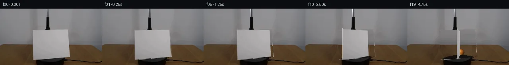

![首帧]()

Round 00
2026-11-04T21:19:54.944533+00:00像素候选变化代码 +280/−0inspection 更新
pixels 97aa26804d3fe4db · code c7644d7222538c6b
查看本轮 generate.py 真实 diff
--- previous/generate.py
+++ current/generate.py
@@ -0,0 +1,280 @@
+"""PixelWorld case_0005 generator.
+
+Local pixel ops only: background plate inpainted from first_frame.png,
+analytic sphere + platform, perspective yaw of the cardstock sprite cut
+from the first frame, translated grabber sprite.
+"""
+from pathlib import Path
+import numpy as np
+import cv2
+from PIL import Image
+import artifact_io
+
+CASE = Path(__file__).parent
+np.random.seed(5)
+
+f00 = np.array(Image.open(CASE / 'first_frame.png').convert('RGB'))
+assert f00.shape == (144, 256, 3)
+H, W = 144, 256
+img = f00.astype(np.float32)
+bright = img.mean(2)
+
+# ---------------------------------------------------------------- geometry
+CARD = np.array([[82.7, 55.5], [170.5, 53.0], [174.5, 123.5], [83.0, 129.5]], np.float32)
+CX0, YC0 = 128.6, 91.0 # card pivot
+FOCAL = 400.0
+PLAT_CX, PLAT_CY, PLAT_RX, PLAT_RY = 133.0, 135.0, 49.0, 17.0
+BALL_X, BALL_Y, BALL_R = 134.0, 112.0, 9.0
+
+TOOL_SHIFTS = {0: 0, 1: 2, 2: -14, 3: -32, 4: -50} # frame -> dy, gone after 4
+YAW0 = np.deg2rad(4.5)
+
+yy, xx = np.mgrid[0:H, 0:W].astype(np.float32)
+
+
+def poly_alpha(poly):
+ """Antialiased coverage of a polygon on the HxW grid (4x supersample)."""
+ s = 4
+ m = np.zeros((H * s, W * s), np.uint8)
+ cv2.fillPoly(m, [(np.asarray(poly, np.float32) * s + 0.5).astype(np.int32)], 255)
+ return cv2.resize(m, (W, H), interpolation=cv2.INTER_AREA).astype(np.float32) / 255.0
+
+
+card_alpha0 = poly_alpha(CARD)[..., None]
+
+# ellipse metric for the platform
+emet = ((xx - PLAT_CX) / PLAT_RX) ** 2 + ((yy - PLAT_CY) / PLAT_RY) ** 2
+
+# ------------------------------------------------- wall behind the grabber
+wall_tool = img.copy()
+for y in range(0, 54):
+ l, r = img[y, 98], img[y, 140]
+ t = (np.arange(106, 135) - 98) / (140 - 98)
+ wall_tool[y, 106:135] = l[None] * (1 - t[:, None]) + r[None] * t[:, None]
+wall_tool += np.random.normal(0, 1.1, wall_tool.shape)
+
+# grabber sprite alpha (difference from modeled wall, restricted to bbox)
+diff = np.abs(img - wall_tool).mean(2)
+tool_alpha = np.clip((diff - 5) / 9, 0, 1)
+tool_alpha[:, :107] = 0
+tool_alpha[:, 132:] = 0
+tool_alpha[54:, :] = 0
+tool_alpha[:1, :] = 0
+tool_alpha = cv2.GaussianBlur(tool_alpha, (3, 3), 0)[..., None]
+tool_rgb = img.copy()
+
+# ------------------------------------------------------- clean plate build
+plate = img.copy()
+
+hole = (card_alpha0[..., 0] > 0.02)
+
+# ---- wall zone (per-row interpolation between anchors x=79 and x=178)
+for y in range(52, 144):
+ xs = np.where(hole[y])[0]
+ if len(xs) == 0:
+ continue
+ l = img[y, 79].copy()
+ r = img[y, 178].copy()
+ t = (xs - 79) / (178 - 79)
+ base = l[None] * (1 - t[:, None]) + r[None] * t[:, None]
+ if y < 90:
+ # smooth wall: interpolated gradient + light noise
+ vals = base + np.random.normal(0, 1.1, base.shape)
+ else:
+ # wood: mirrored grain from the left table strip, brightness re-centered
+ src_x = (162 - xs) % 124
+ src_x = np.where(src_x < 18, 36 - src_x, src_x)
+ src_x = np.clip(src_x, 18, 78).astype(int)
… diff truncated; 193 more lines …